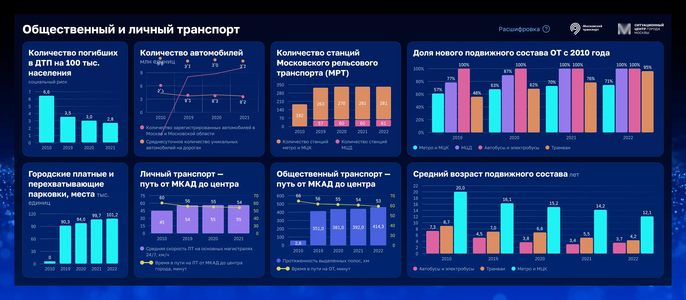
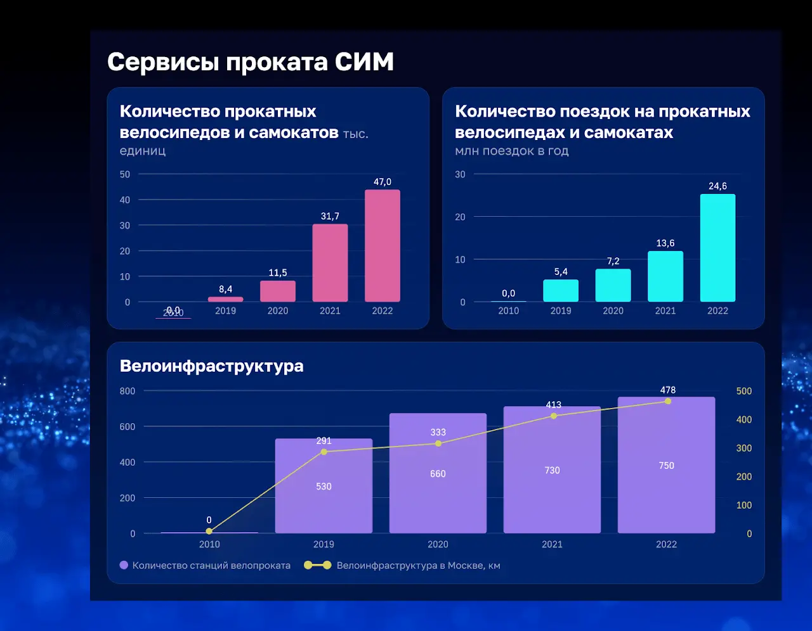
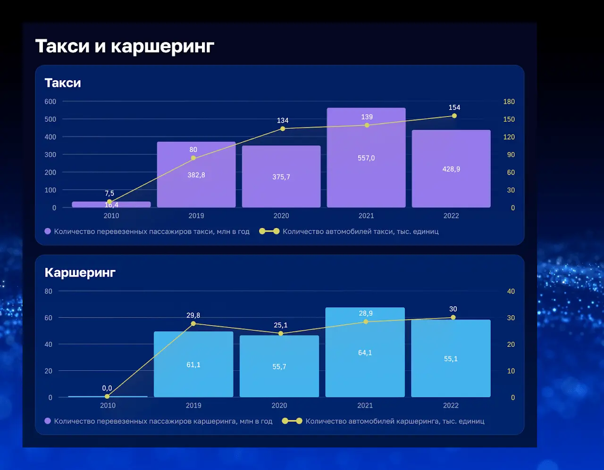
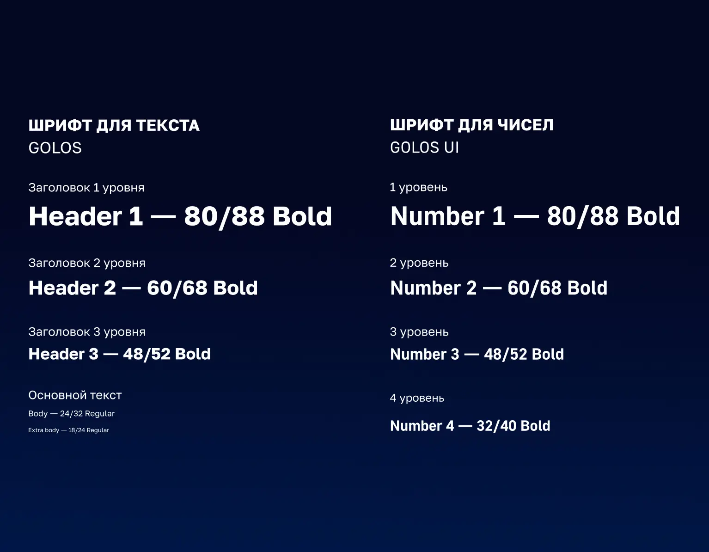
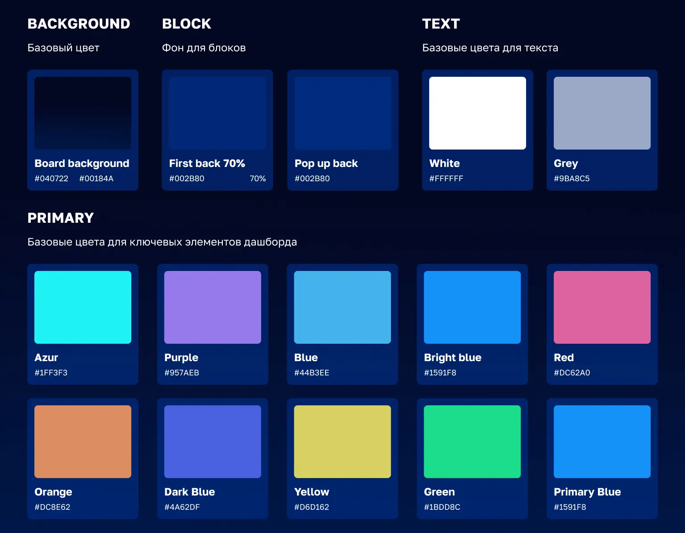
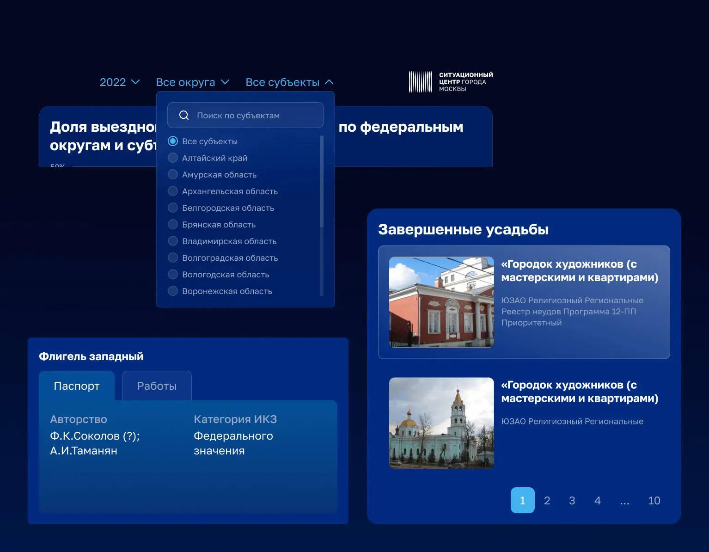
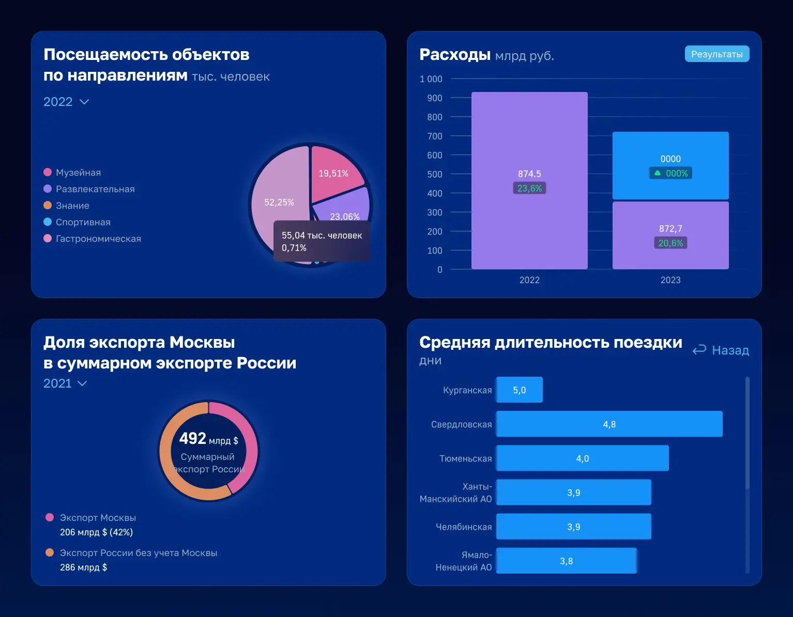

Резюме
Контекст
«Проектно-аналитический центр Мосцифра» разрабатывает аналитические решения для исполнительных органов власти города.
Дашборды представляли собой веб-интерфейсы, которые использовались в браузере и транслировались на ТВ-панелях и больших экранах.
Интерфейсы не предполагали пользовательского ввода — отображались агрегированные управленческие показатели с автоматическим обновлением данных из базы.
Роль
Я работал в команде дизайнеров с распределёнными ролями. Моя роль была сфокусирована на UX-архитектуре дашбордов и визуализации данных.
Решения принимались совместно с менеджером данных и заказчиком. Я задавал UX-рамку, в рамках которой оценивалась корректность структуры дашборда, типов графиков и визуальной иерархии.
- Проектировал архитектуру аналитических дашбордов
- Определял соответствие типов графиков структуре данных
- Инициировал упрощение перегруженных решений
- Адаптировал визуализацию под управленческие сценарии
- Предупреждал UX-риски при изменении требований
- Следил за соблюдением стандартов UI Kit
UX-вызовы
- Плотность данных и риск перегрузить пользователя.
- Разные контексты: обзор → детализация → сравнение.
- Нужна скорость считывания и предсказуемость.
Решения
Архитектура дашбордов проектировалась на двух уровнях: уровне экрана и уровне отдельных блоков. Это позволило системно работать с данными, сохранять читаемость интерфейсов и масштабировать решения.
Дашборды имели структуру из трёх зон. Центральная зона содержала ключевые показатели для принятия управленческих решений, а боковые зоны дополняли основную картину дополнительными метриками.
Блоки проектировались как универсальные контейнеры, включающие заголовок, краткое описание, график и элементы управления. Это позволяло подставлять разные типы графиков без изменения логики интерфейса.
Тип визуализации подбирался исходя из структуры данных и управленческого сценария: линейные графики для динамики, столбчатые для сравнения, круговые диаграммы для структуры показателей.
Примеры интерфейса
Интерфейсф проектировались совместно с менеджером данных, который формировал требования со стороны заказчика и собирал обратную связь от пользователей



UI Kit
Перед активной разработкой дашбордов был спроектирован UI Kit, правила использования которого я формировал и поддерживал




Результаты
- Разработано более 30 аналитических дашбордов для исполнительных органов
- Данные приведены к единому UX-стандарту
- Снижена когнитивная нагрузка на пользователей
- Ускорен процесс проектирования новых дашбордов
- Дашборды используются для мониторинга и принятия управленческих решений
Выводы
- Дашборды выстроены на основе чёткой архитектуры данных и сценариев использования
- Для разных типов показателей применены соответствующие способы визуализации, упрощающие интерпретацию данных
- Управленческие дашборды спроектированы простыми и однозначными для быстрого принятия решений
- Стандартизация через UI Kit позволила масштабировать решения и поддерживать единый уровень качества
- UX-решения выстраивались с учётом ограничений и требований к точности аналитической информации